Buổi còn dư trong gói đã hết hạn được chuyển sang gói khác của cùng khách ngay trên app nội bộ: CS tạo yêu cầu trên trang khách hàng, quản lý (OM) duyệt trên trang Duyệt yêu cầu. Nếu duyệt nhầm, OM hoàn tác được ngay trên trang khách. Không ai phải sửa tay số buổi nữa.
Ảnh chụp trên môi trường thử nghiệm. Tên, số điện thoại, email, số CCCD và ngày sinh của khách đã được thay bằng dữ liệu giả.
Trước đây, khi khách gia hạn, nhân viên thường cộng tay số buổi còn lại vào gói mới trên Directus Admin nhưng không trừ ở gói cũ. Gói cũ vì vậy vẫn hiện còn buổi, dù số buổi đó đã được chuyển rồi.
Nếu tạo yêu cầu chuyển buổi từ gói cũ đó, khách sẽ được cộng hai lần. Ví dụ: gói cũ còn 29 PT đã được cộng tay sang gói mới, chuyển thêm lần nữa thì gói mới có 55 PT.
Dev rà lịch sử sửa tay và tìm ra các khách dưới đây. Mỗi khách có một gói đang hoạt động từng được cộng tay đúng bằng số buổi còn lại ở một gói hết hạn, nên nhiều khả năng đã chuyển tay. Mở trang khách bằng đường dẫn /customers/<mã khách> trên app.
| Mã khách | Gói hết hạn (còn) | Gói đang dùng (được cộng tay) | Ngày sửa tay |
|---|---|---|---|
| d772e84a-2c12-4ef3-b5e0-42d2082ee077 | House Membership · 29 PT, 1 Massage | Solo Membership | 27/09/2026 |
| 020dc806-f2c4-4abb-895c-ee2e65d2fe4b | (không tên) · 6 Massage | membership | 09/03/2026 |
| 4a22007c-1a75-46a7-b42f-cada3001f3cc | (không tên) · 4 PT | House Membership | 14/03/2026 |
| f6a8382a-8f3f-4747-aa15-c6a7f7ea9afe | (không tên) · 7 PT | House Membership | 04/04/2026 |
| 26e11fa8-f1e4-4f62-828b-584b760ed791 | membership · 18 PT | House Membership | 16/05/2026 |
| 6378abf3-a016-4072-a00b-2a85ca713649 | House Membership · 14 PT | House Membership | 03/07/2026 |
| 75a016c2-9391-450b-9bcd-600a3936ae98 | House Membership · 4 PT | House Membership | 11/07/2026 |
| b1fb7e66-13b5-4c09-8bcf-71fb868e682e | House Membership · 5 PT | House Membership | 19/07/2026 |
| ba04c628-cdc5-47bb-8aa7-1db8b52b3491 | 2 gói (không tên) · 1 PT và 6 Massage | House Membership | 17/08/2026 |
| dda3e0ab-8d51-43e5-974b-1383265ce733 | Month Pass · 52 PT | House Membership | 29/08/2026 |
| dae3ab5e-bcb8-429f-8473-bfd7253bcc12 | Month Pass · 4 PT | Month Pass | 02/09/2026 |
| fa2742cd-338d-4fa8-8a69-6d035a9a8efa | House Membership · 4 PT | Month Pass | 03/09/2026 |
| 58461e01-addb-440f-99cf-9c82b22b450f | membership · 13 PT, 2 Massage | Solo Membership | 17/09/2026 |
| 3e61ad38-b8f4-49c0-85fe-1778d40e33f6 | 2 gói: Month Pass · 4 PT, 1 Massage; House Membership · 7 PT, 1 Massage | Month Pass | 21/09/2026 |
| e93d1b5e-ca04-49f8-b69b-3a1674602052 | House Membership · 2 PT | Solo Membership | 23/09/2026 |
| b3c5156b-02ea-4836-94c0-8273fd48485f | (không tên) · 9 PT | Club Membership | 25/09/2026 |
Danh sách lấy từ dữ liệu clone và chỉ gồm các trường hợp số buổi trùng khớp hoàn toàn, nên chưa đầy đủ. Trước khi mở tính năng trên prod, dev chạy lại truy vấn này trên dữ liệu thật. Dòng tô vàng là trường hợp đã xác nhận khi test. Danh sách chỉ ghi mã khách, không ghi tên hay số điện thoại, vì file này nằm trong repo.
subscription_balances) đã bị khoá trên Directus Admin với mọi tài khoản. Cần cộng hoặc trừ buổi không phải do chuyển gói thì báo quản lý hoặc dev để ghi một dòng điều chỉnh có lý do.Nút nằm ở đầu mục Gói hội viên & quyền lợi. Nút chỉ hiện với CS, quản lý và admin.
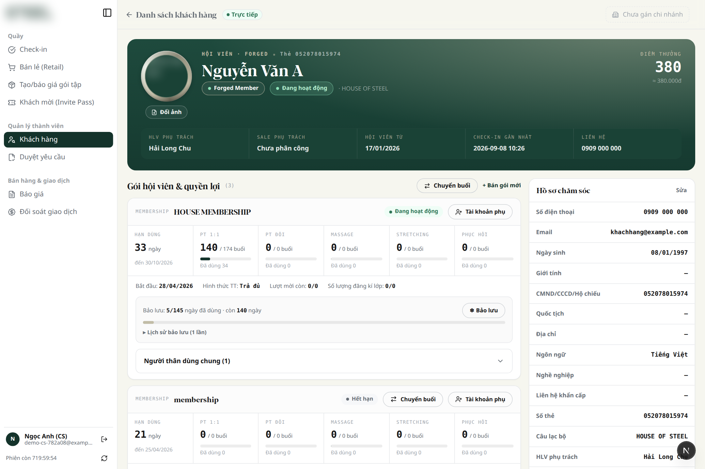
Hoặc bấm Chuyển buổi ngay trên thẻ của gói đã hết hạn. Cách này chọn sẵn gói đó làm gói cũ.
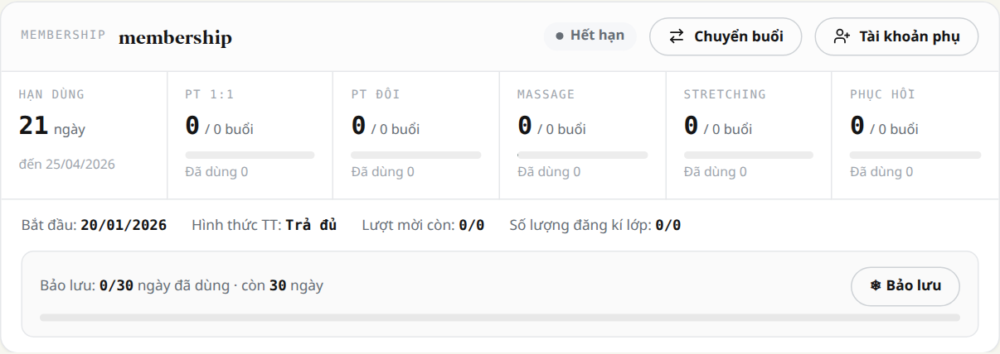
Số buổi trên thẻ gói hết hạn có thể hiện 0 dù khách vẫn còn buổi, vì gói cũ chưa có sổ số buổi. Form chuyển buổi luôn hiện đúng số còn lại.
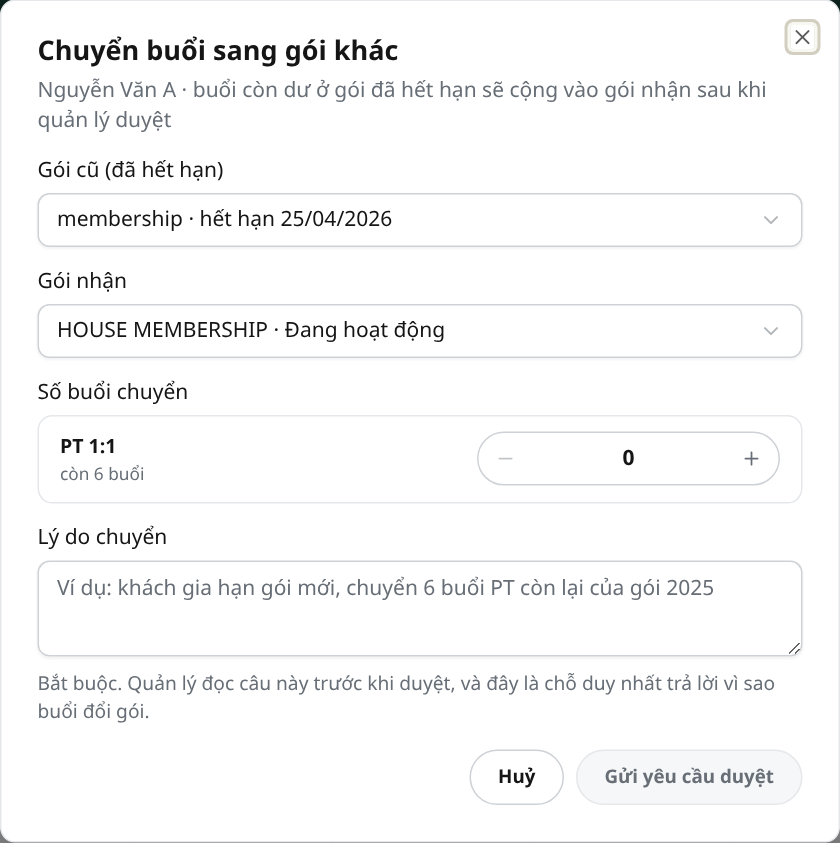
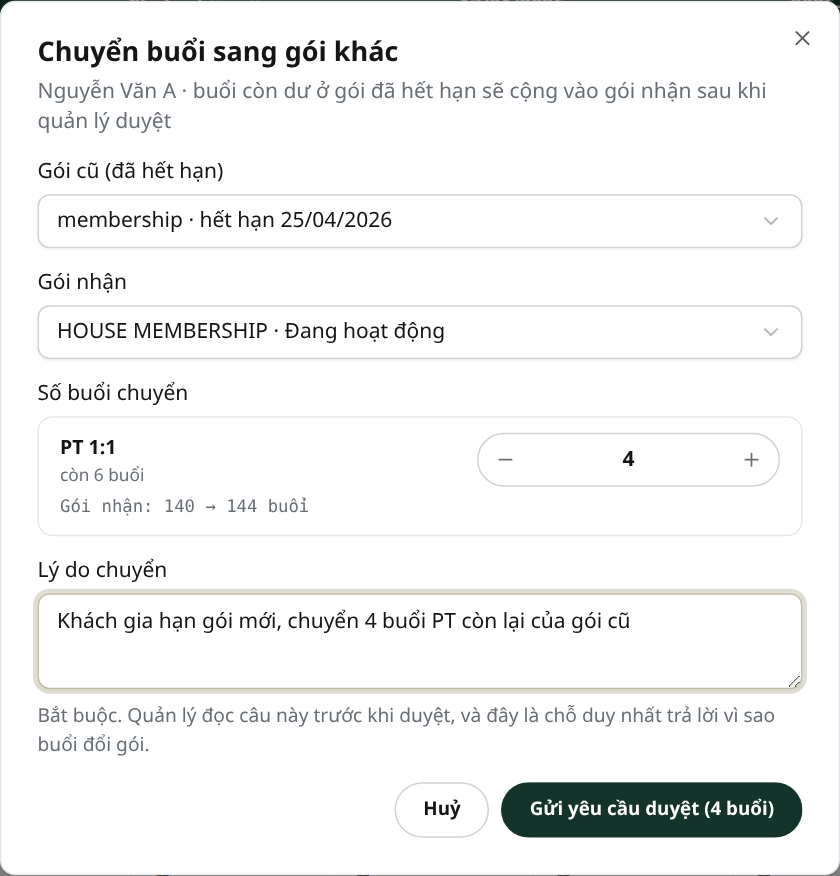
Số buổi chưa thay đổi. Yêu cầu hiện trong mục Chuyển buổi trên trang khách, ở trạng thái "Chờ duyệt".
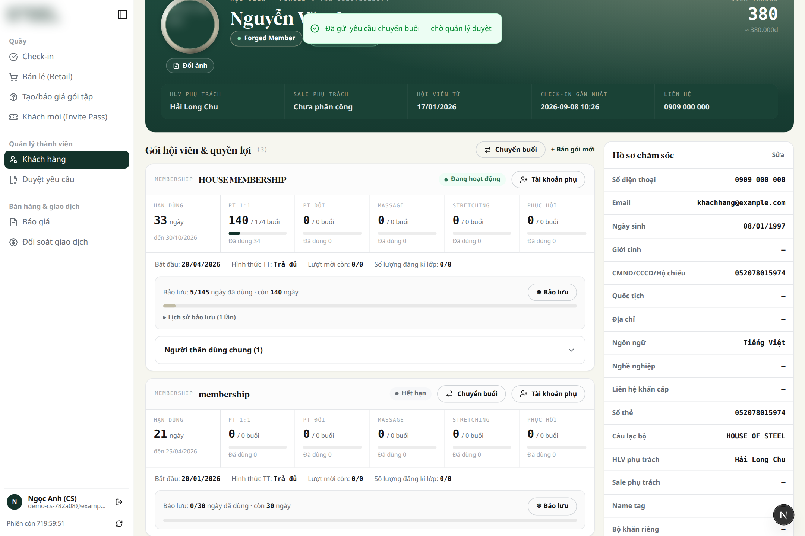
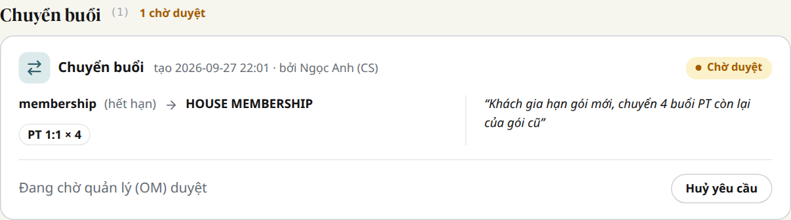
Mỗi yêu cầu là một thẻ: khách (bấm vào tên để mở trang khách), gói cũ → gói nhận, số buổi từng loại, lý do và người tạo.
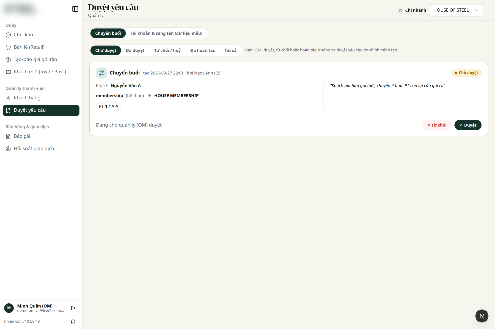
Số buổi của cả hai gói giữ nguyên. Người tạo sẽ thấy lý do.
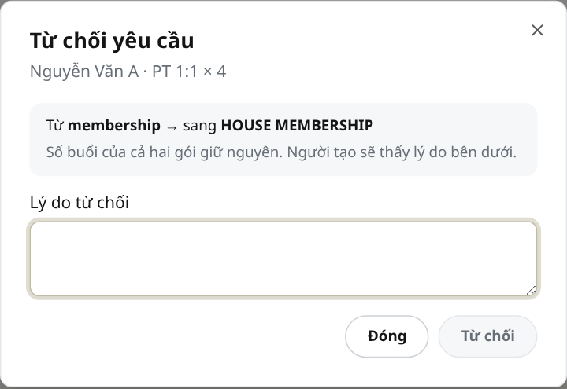
Ghi chú khi duyệt không bắt buộc. Bấm Duyệt & chuyển buổi: gói cũ bị trừ, gói nhận được cộng, và thẻ gói trên trang khách cập nhật số buổi mới.
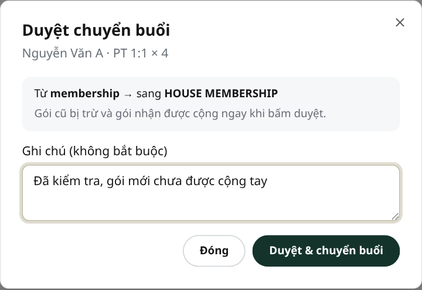
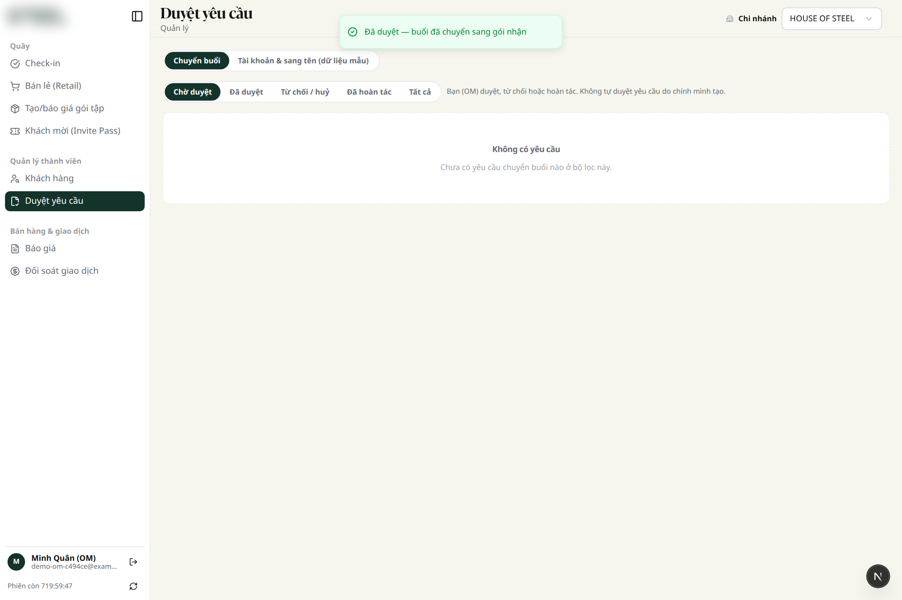
Sau khi duyệt, thẻ gói nhận hiện số buổi mới. Mục Chuyển buổi (ngay dưới các thẻ gói) liệt kê mọi yêu cầu của khách: chờ duyệt, đã duyệt, đã từ chối, đã hoàn tác.
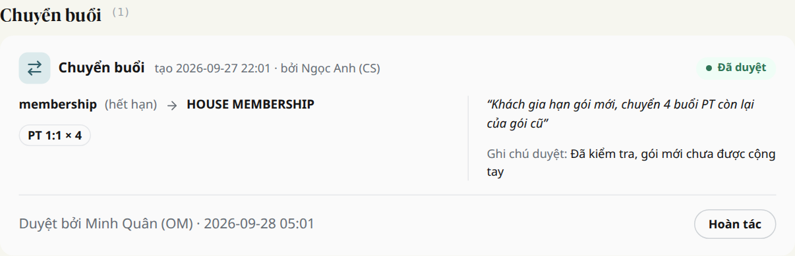
Bắt buộc ghi lý do. Buổi được trả về gói cũ. Không hoàn tác được nếu khách đã dùng một phần số buổi được chuyển sang (hệ thống sẽ báo).
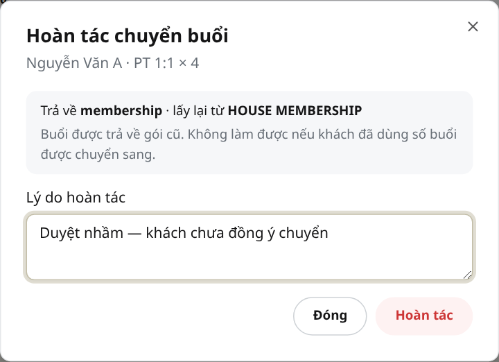
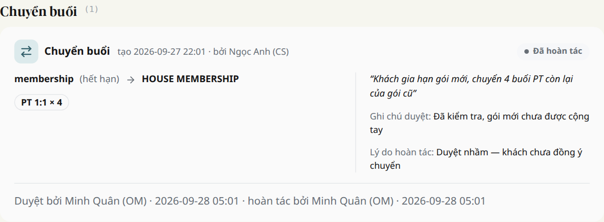
Khoảng 200 gói tạo từ 10/2023 đến 05/2024 chưa có chủ gói: hồi đó khách chỉ được gắn vào danh sách thành viên của gói. Chuyển buổi chỉ làm được giữa hai gói cùng một chủ gói, nên các gói này không hiện trong form, và nếu cố chuyển thì hệ thống báo "Hai gói phải cùng một chủ gói".
Không xử lý hàng loạt. Khi có khách hỏi thì làm như sau:
customer_subscriptions), xem danh sách thành viên. Xác nhận khách đang hỏi đúng là người mua gói: đối chiếu hợp đồng hoặc hoá đơn, hoặc hỏi người phụ trách. Gói có nhiều thành viên thì phải hỏi rõ ai là chủ.subscription_owner) của gói cũ rồi lưu. Chỉ sửa trường này, không sửa số buổi.| Thông báo | Nghĩa là | Làm gì |
|---|---|---|
| Gói cũ không còn đủ buổi | Số buổi xin chuyển vượt số còn lại, kể cả phần đang chờ duyệt ở yêu cầu khác | Giảm số buổi, hoặc xem các yêu cầu đang chờ của gói đó |
| Không tự duyệt yêu cầu do chính mình tạo | Bạn là người tạo yêu cầu này | Nhờ một quản lý khác duyệt |
| Khách đã dùng một phần số buổi được chuyển sang | Không hoàn tác được vì gói nhận không còn đủ buổi để trả | Báo quản lý xử lý riêng |
| Số buổi của gói đang bị âm | Dữ liệu gói đã sai từ trước | Báo quản lý hoặc dev sửa dữ liệu trước khi chuyển |
| Số dư sổ cái của gói không khớp dữ liệu | Sổ số buổi của gói đang lệch, thường do sửa tay trước đây | Đừng bấm lại. Báo dev kiểm tra gói đó |
| Hai gói phải cùng một chủ gói | Gói cũ chưa có chủ gói (gói 2023–2024), hoặc hai gói của hai người khác nhau | Xem mục Gói cũ (2023–2024) ở trên |
| Yêu cầu này đã được xử lý | Người khác vừa duyệt, từ chối hoặc huỷ | Tải lại trang để xem trạng thái mới |